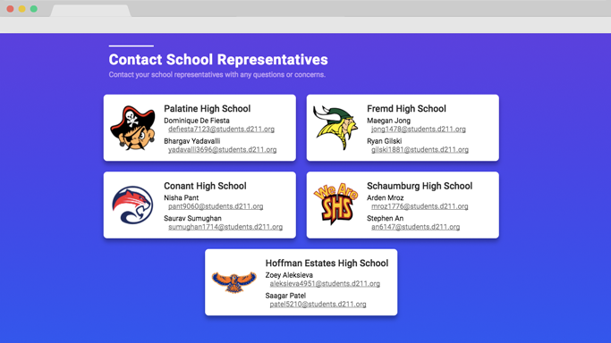

Code211: District 211’s Flagship Hackathon
I was tasked with creating a website for a Hackathon I was helping create called Code211 for Township High School District 211. The event was created to help get high school students involved in the world of programming, hoping to bring in everyone from beginners to experienced coders to this massive programming event. This was the second Hackathon I was creating the website for, so some of the solutions/designs I used were very reminiscent of the site I created for Chicago Hacks.
Building the Theme of Code211
The district consisted of 5 high schools, all with very distinct and different school colors. Since this was a district wide event, we were including all high schools in this event, and as a result I wanted to pick a color that didn’t represent any of the schools for our website’s color palette.
I chose to use a dark blue and dark purple gradient as the accent color. The purple took precedence over the blue whenever a gradient was not possible, just because the purple was more vivid and was better for elements like links and buttons.
Designing the Logo
The next task before the actual website was the logo for the event. We wanted something simple for the logo, as anything too complicated would incur extra costs when we put it on a t-shirt. To make the logo versatile I needed to create a logo that would be easy to render in two colors that would work on print materials with white and colored backgrounds.
I drew inspiration from other Hackathon’s branding, and decided to pick a simple shape, and then used negative space to write the event name in it. I chose a hexagon as the base shape, and then stacked the words “Code” and “211” inside the base of the logo. The “211” text was our District’s logo, hoping to remind visitors that this was being run by the high school district.

Designing the Poster
We needed to advertise this event to people, so naturally there needed to be a poster to hang up all around the school to help advertise the event. All of the posters on the walls of our school are pretty poorly designed, usually badly put together with too many colors and they were very flashy and were noticeable but not effective in their purpose. They would catch your attention and then immediately lose it due to the lack of flow within the poster.
In the sea of bright colors filling the bulletin boards around the school, the best way to make our poster stand out was to just make it look as professional as possible. Our color palette isn’t the brightest, so the next obvious option after bright colors is large text.
The poster starts out with a large header meant to draw initial attention. Then if the reader is still reading, they will learn about the event and some of the key details of the event as their eyes wander down. If the reader is still reading, and actually interested, they will find the website and date of the event at the bottom of the poster. It just logically flows, hoping to avoid confusing the reader.
The poster was mostly white in an attempt to make it printer friendly. I used the bold Segoe font to bring a lot of attention to the text. The poster followed our color scheme, with multiple blue to purple gradients implemented in the design to help build brand identity. I went for a flat design, but instead of the primary secondary color scheme that most flat designs use, I just stuck to neutral colors and one gradient for accents.
The poster was largely informational, I felt like the reader would need to be instantly informed on what the event was to keep their interest. The word Hackathon is definitely not well known among high school students.
Finding the Perfect Typeface
The font is an important aspect of a website. It plays a large factor in not only readability, but also is a factor in how your brand is seen. I wanted to make sure I kept a modern look for our site, because, well, a programming event should emanate a modern feel.
I kept the width of text boxes to a maximum of 800px to keep the readability of the text. This keeps lines to around 20 words, which is about the sweetspot for how long you want each line.

The font I ended up using was a sans-serif font called Roboto, which is famously used by Google in things such as their popular operating system, Android. It is a familiar font, which only adds to the readability of the font. The more familiar a user is with a font, the more comfortable they are with it, leading to easier and faster reading.
Creating the Dynamic Schedule
One of the biggest challenges was displaying the two day schedule in the most dynamic and readable way possible. There is a lot of events, and displaying both days on the page list style would make it unwieldy and long.
To solve this problem I opted for a tab system to display the images.

I used the blue to purple gradient in this element also, having it subtly fade from purple to blue in the background. This kind of transition can help give a user an idea of how long the element is, which can be especially helpful when users use the website on mobile and need to scroll through the schedule.
This tabular system was efficient in displaying the two days, in that it cut the space used in half by showing one day at a time. You are able to click on either of the tabs to choose which day’s schedule you wanted to see. I used some JavaScript functions to help us create this interactive tab system.
The Grids of the Site
There are two grids on the site, the grid with the FAQ’s and the grid with the School Representatives. They both contain fade up animations when you scroll down.
I used the gradient on this page also, and then used box shadows and fading animations to really make these boxes pop.
The key in these grid systems was to make sure they did not blend in with the background of the webpage, so I added some subtle box shadows to make them pop from the background.
The Mobile View
Our target audience was high school students, a generation known for using mobile devices. So I needed to make sure our site looked great on mobile also, and honestly, it is 2017, so a mobile optimized site is almost a requirement at this point.
I made sure the viewport scaled all the way down to 320px of width, which is about the smallest screen you can find these days. I made sure I did not remove any elements, I wanted the website’s experience to be the same on a phone as on a laptop.
Conclusion
This site was very similar to what I made for Chicago Hacks, and as a result the structure was very similar, but this project definitely made better use of the space. On my Chicago Hacks website, the spacing was awfully inconsistent and there was a lot of wasted space and places where I could make elements smaller (especially the headers and images). This website was much shorter in scroll length, and it felt much better to use. I had not really considered the negative impact of a far scrolling website, and the difference between the two websites definitely brought new perspective on the issue.